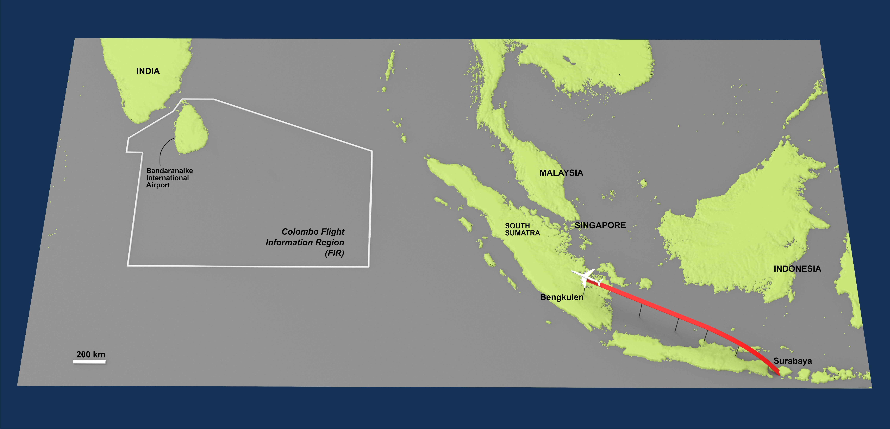
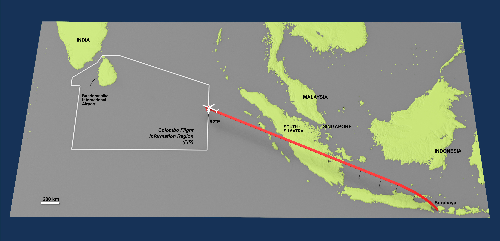
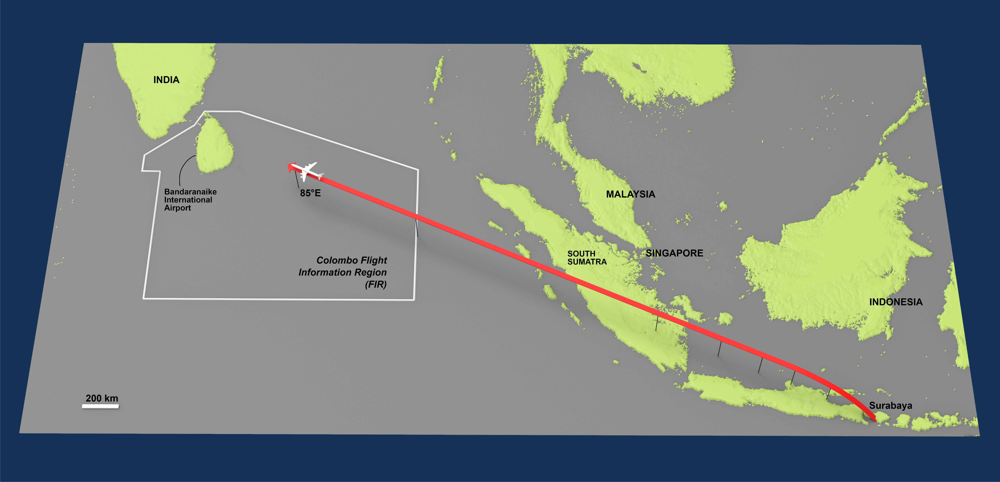
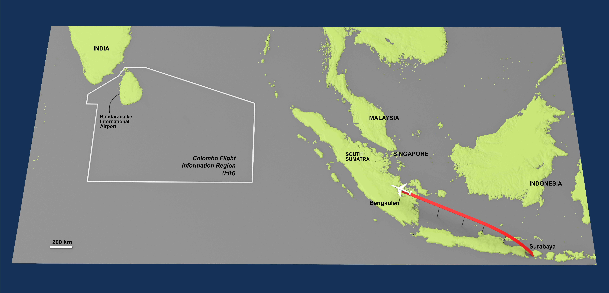
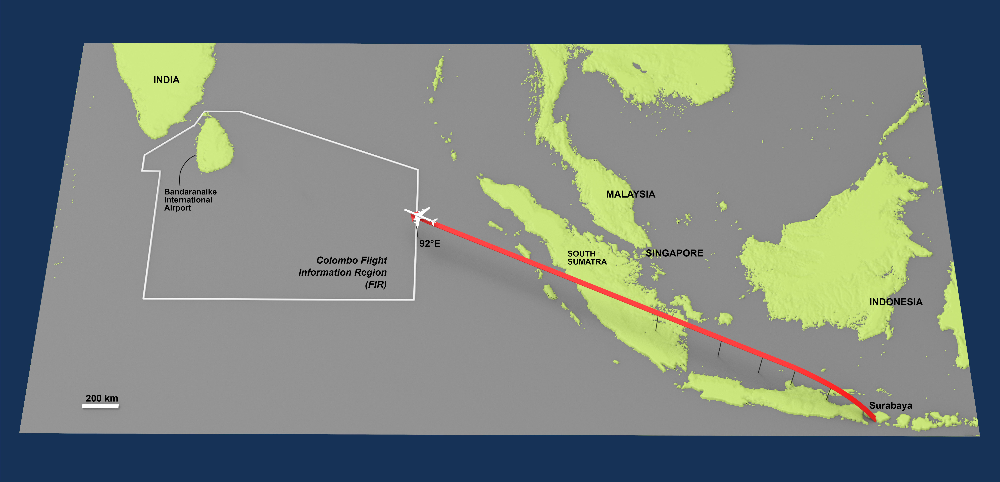
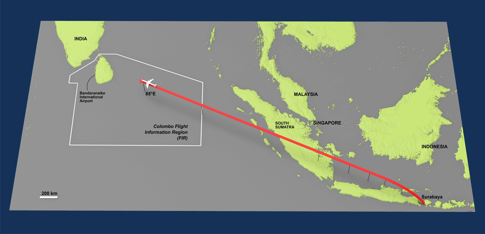

5.33 PM (1203 GMT)
The Aircraft had departed Surabaya
5.57 PM (1227 GMT)
Passed over N.D.B, Semarang at altitude of 26,000 ft and estimating arrival over NDB,
Jerabon at 6.11PM (1241 GMT)
6.11 PM (1241 GMT)
The aircraft reported over NDB Jerabon and estimated over Halim Beacon at 6.24PM(1254 GMT) hours.
6.24 PM (1254 GMT)
Arrival over Halini Beacon at the estimated time,
the aircraft had reported leaving altitude of 26,000 ft for 35,000 ft and reported estimating over NDB, Tanjungkarang at 6.39PM (1309 GMT).
6.39 PM (1309 GMT)
Passed over N.D.B, Tanjungkarang at the estimated time and gave an estimate for NDB Bengkulen as 7.04PM (1334 GMT) hours. At 6.35PM (1305 GMT) hours the aircraft had reported reaching 35,000 ft.
7.04PM (1334 GMT)
The aircraft passed over Bengkulen at the estimated time at 35,000 ft. Bengkulen was the last navigational fix the aircraft passed over on this flight. gave the estimate for Colombo FIR boundary 92°E as 8.33PM (1503 GMT) hours.
8.27PM (1457 GMT)
Reported over the entry point to Colombo Flight Information Region (FIR) at 010 10'N, 92°E
which is 692 NM from Bengkulen.
6 minutes Earlier than estimated time earlier
9.27PM (1557 GMT)
The next reported position was at 85°E also over the sea and 467 NM from the 92°E position.
1 hour after the 92°E position.
From this position the aircraft gave an estimate for the coast at 9.57 PM(1627 GMT) hours.
9.52PM (1622 GMT)
The pilot contacted Approach Control and reported that he was 130 NM out at an altitude of 35,000 feet.
9.55PM (1625 GMT)
The aircraft had contacted Colombo Control and reported 120 miles out at 35,000 ft estimating the coast at 10.00 PM (1630 GMT) hours and Bandaranaike International Airport at 10.15 PM (1645 GMT) hours.
Colombo Area Control cleared the aircraft to commence descent when ready to 15,000 ft and to report 50 NM out.
9.57 PM (1627 GMT)
Arrival over the coast.
10.05 PM (1635 GMT)
The pilot reported 50 NM out at 16,000 ft. The aircraft was cleared to descend to 5,000 feet and to report approaching 8,000 feet.
10.08 PM (1638 GMT)
The aircraft had reported approaching 8,000 feet and was instructed to contact Approach Control.
At 10.09.48 PM (1639.48 GMT): the aircraft reported " We arc out of seven thousand for six thousand and we are one four miles out."
10.09.55 PM (1639.55 GMT)
The Controller replied "One three eight, Roger descend to two thousand feet, QNH one zero one zero temperature two six runway zero four wind is zero six zero degrees one zero report Kilo Alpha Tango or field in sight."
10.10PM (1640 GMT)
This was acknowledged by the aircraft in the manner "Roger we are cleared to two thousand feet one zero one zero for runway zero four Kilo Alpha Tango or field in sight."
This was confirmed by the controller by repeating "One three eight."
10.11PM (1641 GMT)
The crew continued their descent until the airplane crashed into the mountain at an altitude of 4,355 feet on the fifth hill of the Sapta Kanya range, about 40 NM East of Colombo.